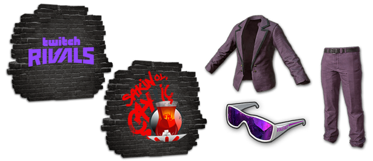

Назад
22 апреля начнется следующий турнир из цикла Twitch Rivals по PUBG: Battlegrounds. В нем поучаствуют контент-мейкеры из Турции.
В рамках чемпионата состоятся пять шоу-матчей. В них поучаствуют 64 игрока, включая восемь капитанов. Ими станут стримеры Elraenn, KendineMüzisyen, Mithrain, 10000DAYS, Miafitz, Hype, Unlostv и wtcN. Как и на других турнирах серии Twitch Rivals, капитаны соберут команды из зрителей и других контент-мейкеров по собственному желанию.
На всех каналах капитанов команд будут доступны Twitch Drops. Зрители смогут получить ящики Twitch Rivals Crate, в которых содержатся два граффити, очки и костюм.
Для активации подарка необходимо привязать игровой профиль к платформе Amazon и дождаться, пока специальная полоска просмотра зафиксирует награду — для получения всех Twitch Rivals Crate необходимо провести на трансляции не менее трёх часов.

Награды за просмотр Twitch Rivals